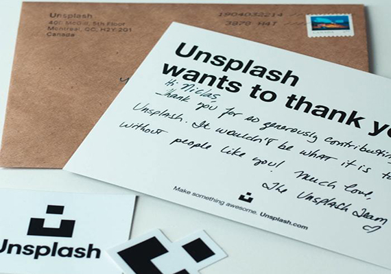

Judith Membrives
Aunque aún existe en parte del imaginario colectivo la percepción de que diseñar significa
poner algo bonito, lo cierto es que muchas empresas empiezan a entender que el diseño va mucho más allá de la estética y ven el valor diferencial que les puede aportar la disciplina. La necesidad de innovación, diferenciación y fidelización constante ha provocado que las organizaciones tengan interés en incluir los procesos y principios del diseño en sus equipos. El problema principal es que adaptar estas metodologías requiere dedicación y esfuerzo, puesto que al final, de lo que se trata es de transformación cultural interna. En resumen, hablamos de un cambio en el paradigma empresarial y de introducir a la persona usuaria en el centro de todo el proceso de creación de soluciones, productos y servicios.
Esta tendencia, muy presente en grandes empresas y en start-ups basadas en soluciones tecnológicas, ha sido ya analizada por algunas grandes consultoras. Uno de los estudios más importantes realizados hasta la fecha es el de McKinsey & Company, que vincula los resultados financieros de trescientas empresas con la importancia que se le da internamente al diseño centrado en la persona. Vale la pena revisar la metodología utilizada durante la investigación así como los resultados, puesto que son la culminación de cinco años de seguimiento.
A grandes rasgos, el informe resume las conclusiones con cuatro axiomas esenciales que deben ser reales dentro de las organizaciones para conseguir crear una cultura empresarial basada en el DCU:
Las decisiones de diseño son el fruto de un proceso de empatía con las personas usuarias que utilizarán los productos y servicios. Este proceso de empatía no puede centrarse únicamente en el producto o servicio como un factor aislado, como bien nos enseñó Don Norman, inventor del término experiencia de usuario:
“ Ningún producto es una isla. Un producto es más que el producto. Es un conjunto cohesivo e integrado de experiencias. Analice todas las etapas de un producto o servicio, desde las intenciones iniciales hasta las reflexiones finales, desde el primer uso hasta la ayuda, el servicio y el mantenimiento. Haga que todos trabajen juntos sin problemas. ”
Así pues, las decisiones acerca del diseño de un producto o servicio no pueden tomarse solamente desde la funcionalidad, ergonomía/usabilidad y estética, sino que es condición sine qua non tener en cuenta las emociones, las creencias, las preferencias, los modelos mentales, las respuestas físicas y psicológicas, las percepciones, los comportamientos y los éxitos y fracasos que determinan, al fin y al cabo, la satisfacción por parte de la persona usuaria. En conclusión, no podemos separar la cognición de la emoción al plantear una solución de diseño, puesto que estaremos dejando de lado aspectos relevantes para la experiencia final.
Esto nos lleva a la investigación y cocreación con las personas. Ya no se trata de lanzar productos y servicios al mercado y ver cómo este reacciona, sino que es indispensable conversar desde el inicio con nuestras personas usuarias, para conseguir el máximo entendimiento y comprensión que nos permita idear y prototipar mejores soluciones. El diseño centrado en las personas se convierte en un aspecto estratégico para las empresas que quieran tener éxito y la escucha e interacción constante con las personas usuarias debe formar parte de sus metodologías de trabajo.
Foto de Niclas Illg en Unsplash. Unsplash agradece a las personas que suben sus fotografías mediante cartas mecanografiadas.
Vemos entonces que cada vez es más importante validar las hipótesis y decisiones que afectan al negocio, motivo por el cual el rol de investigación en experiencia de persona usuaria empieza a calar en las empresas, junto con dinámicas de trabajo basadas en metodologías para comprender, idear e iterar rápidamente como son el Design Thinking, Sprint Design o Lean UX. No se trata, pues, de crear departamentos de UX sin estrategia o por moda, sino de tener perfiles específicos que acompañen la transformación de toda la empresa y canalicen las investigaciones para que después el resto del equipo pueda idear basándose en datos evidentes y reales acerca de cómo son las personas que usan los productos o el servicio.
Vivimos pues en un momento de eclosión del diseño como disciplina estratégica que permite a las empresas diferenciarse mediante la comprensión de la persona usuaria y la cocreación e iteración de las soluciones innovadoras que cambiarán el mercado. Un buen momento para reivindicar la filosofía del diseño centrado en las personas como piedra angular para la transformación y el éxito de las organizaciones gracias al empoderamiento de los equipos internos y de las personas usuarias.